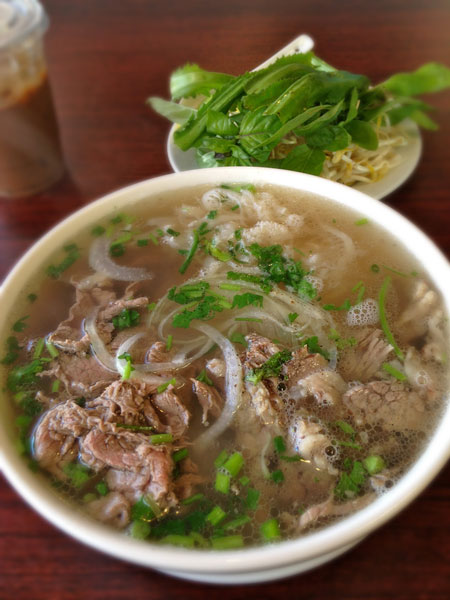

Mom's cooking (obviously)
- My mom makes the best 국수
- She also makes the best fajitas
- Literally the most talented chef I know
Wings (favorite sauces)

- Mango habanero
- Garlic parmesan
- Classic buffalo
Pho
- Perfect for a cold, rainy day
- But perfect for any day let's be real
- I have never, EVER, not been in the mood for pho
- Check out this YouTube video on how to make your own pho broth at home!